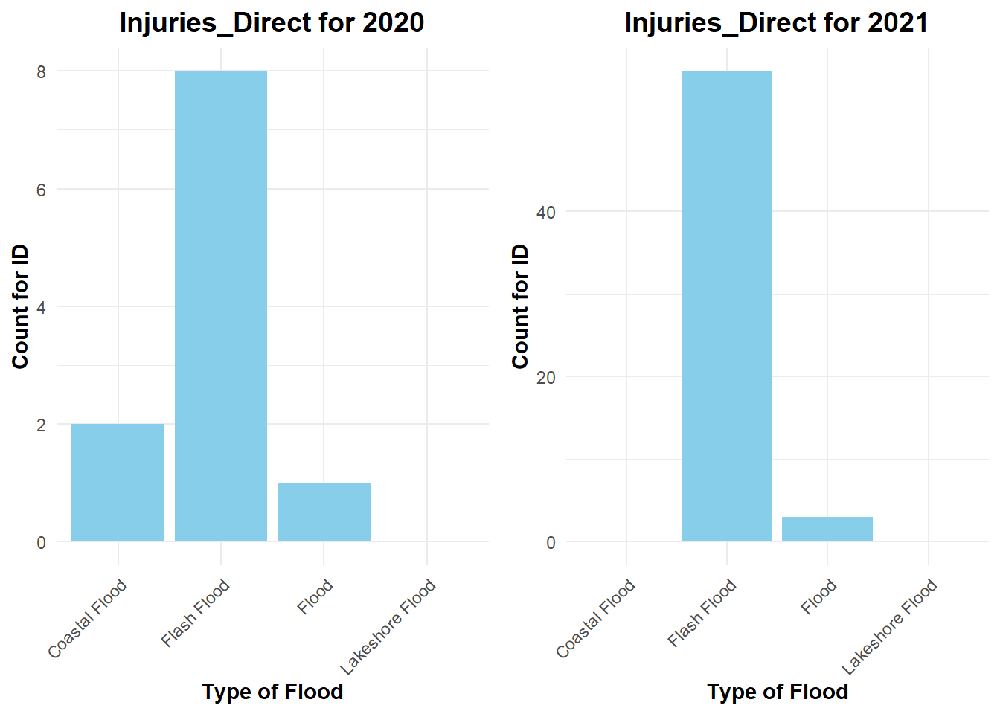
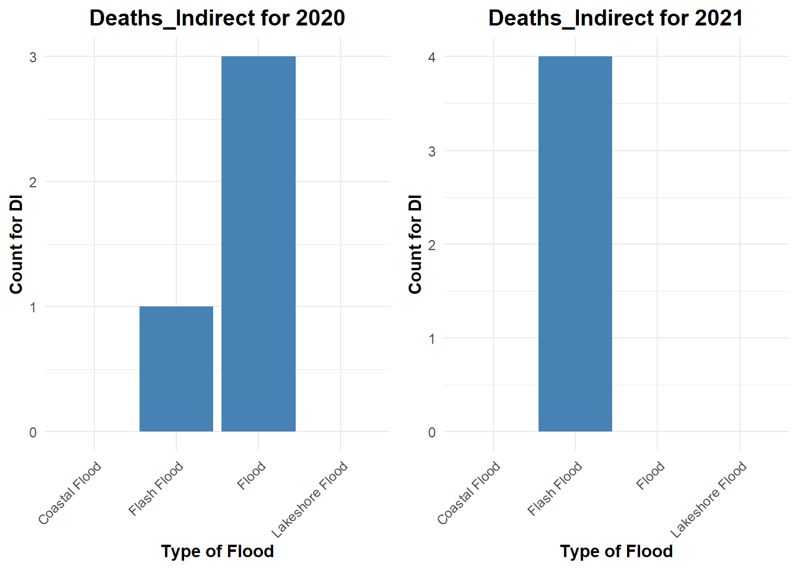

VariableName Description
---------------- --------------------------------------------------------------------------
Flash Flood A sudden and rapid flooding of an area
Flood When water covers normally dry land
Coastal Flood When water from the ocean or sea rises and inundates coastal areas
Lakeshore Flood A flooding event that specifically affects areas near the shores of lakes 615-midterm
Data Cleaning
Detail Document
We start data cleaning with Detail table.
First, we identify the type of event that relates to the flood. We chose “Flash Flood”, “Flood”, “Coastal Flood” and “Lakeshore Flood” as our new event_type variable.
Then we check if all the data here has the year equal to 2020/2021. And we prove that all the values are in 2020/2021.
Finally, we find “Damage_Property” and “Damage_crops” should be changed into numeric for future calculation, then we remove “K” and times 1000 for the value.
FEMA document
And now we start data cleaning with Fema Documents.
First we choose “Flood” in “incidentType”
And then find the year which falls into 2020 and 2021.
EDA
Flood distribution
First, we have a bar plot to show the appearance of these four event type in order to see the distribution

It is clear that “Flash Flood” has a dominant position, and “Flood” also has a much higher value compared to “Coastal Flood” and “Lakeshore Flood”. But it is also clear that the total count of floods in 2021 is much bigger than the total count of floods in 2020.
Injuries and Deaths
Then we consider which flood will bring the most injuries and deaths.
First, we may introduce injuries and deaths.
VariableName Description
---------------------- ------------------------------------------------------------------
Injuries_Direct(ID) The number of people get hurt dircetly because of weather event
Injuries_indirect(II) The number of people get hurt indirectly because of weather event
Deaths_Direct(DD) The number of people die directly because of weather event
Deaths_Indirect(DI) The number of people die indirectly because of weather event 
For Injuries_Direct, “Flash Flood” has a dominant position over others in both 2020 and 2021.
Since the amount of Injuries_Indirect is not a lot, we can not say there is a big difference between 2020 and 2021 though the distribution is different.
For Deaths_Direct, “Flash Flood” has a dominant position over others in both 2020 and 2021.
Since the number of indirect injuries is not large, we cannot say there is a big difference between 2020 and 2021, though the distribution is different.
As a short summary, the distributions of injuries and deaths for 2020 and 2021 are pretty similar. For direct injuries and deaths, we can make the hypothesis that “flash flood” is most common but dangerous since it has a dominant position among all four types of flood. For indirect injuries and deaths, we cannot draw any conclusions since the total count is too small and the distribution is different in 2020 and 2021.
Flood Cause
Then we will consider how floods are distributed in order to prevent them
P_2020.Var1 P_2020.Freq
1 4.98333838
2 Dam / Levee Break 0.15146925
3 Heavy Rain 88.53377764
4 Heavy Rain / Burn Area 0.28779158
5 Heavy Rain / Snow Melt 3.62011512
6 Heavy Rain / Tropical System 2.13571645
7 Ice Jam 0.24235080
8 Planned Dam Release 0.04544078 P_2021.Var1 P_2021.Freq
1 3.27241819
2 Dam / Levee Break 0.09916419
3 Heavy Rain 92.47768806
4 Heavy Rain / Burn Area 1.69995750
5 Heavy Rain / Snow Melt 0.12749681
6 Heavy Rain / Tropical System 2.15327950
7 Ice Jam 0.15582944
8 Planned Dam Release 0.01416631Compared to 2020 and 2021, “heavy rain” has a dominant position in the flood cause. It does make sense since heavy rain is the most common event that will happen in our daily lives. But it is hard for the government to prevent floods. If the government finds out there is heavy rain, they will not conclude there will be a flood.
Damage to property or crops
Since the flood cause cannot help us prevent the flood, we are going to find the relationship between month and damage property or damage crop.
If there is a relationship between month and damage cost, the government can focus more attention on the high-cost month.
VariableName Description
------------------- -------------------------------------------------------------------------
Damage of Property The estimated amount of damage to property incurred by the weather event
Damage of Crops The estimated amount of damage to crops incurred by the weather event 
We can see the damage to property has a few similarities between 2020 and 2021. They both have a high value for September. But in May 2020, it had a high flood value, which didn’t happen in May 2021. Similar to that, in August 2021, it has a low value, which August 2020 doesn’t have.

We can see the damage to crops is similar for both 2020 and 2021, since July and August are two near months. We can make the hypothesis that in July and August, the damage to crops is the most severe among the whole year.
State
By looking at the cost per month, we want to find which states experience the lot floods.
First, we have histograms with the top ten values of flood states

It is interesting since the number of states with floods is totally different between 2020 and 2021. Maybe we can make the hypothesis that some states often get a lot of floods, but for most states, the floods are random, and it is hard to predict whether the next year will be more or less.
FEMA EDA
First we make some explanation of these variables
VariableName Description
------------------ ------------------------------------------------------------------------------
ihProgramDeclared Whether the Individuals and Households program was declared for this disaster
iaProgramDeclared Whether the Individual Assistance program was declared for this disaster
paProgramDeclared Whether the Public Assistance program was declared for this disaster
hmProgramDeclared Whether the Hazard Mitigation program was declared for this disaster 
We can see Individual Assistance program didn’t declared in the flood during 2020 and 2021, while Public Assistance program was declared a little time. Hazard Mitigation program was declared almost every time
Summary
For the flood during 2020 and 2021, “flash flood” and “flood” are the main parts of the event. But “Flash Flood” is the most dangerous since more than 80% of people were hurt or died because of it. And the main cause of floods is “heavy rain,” which accounts for approximately 90% of all the causes. It does make sense since “heavy rain” is the most common event we can meet every day.
Looking at the damage to property and crops, August and September are two months in which property and crops will be damaged. Although there are some abnormal values between 2020 and 2021, the overall distribution still has a lot of similarities. But when we compare the top 10 states that experienced the most floods, there is a big difference between 2020 and 2021. So we can make the hypothesis that the flood will occur in different states over the years.
With the Fema data, we can see the Individual Assistance Program wasn’t declared in the flood during 2020 and 2021, which means this program has a lot of work to do compared to the Hazard Mitigation Program, which was declared almost every time. The other two programs had some differences but did work in some case.